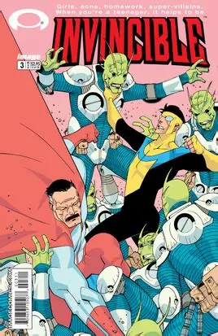
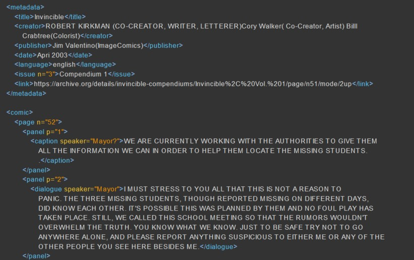

Invincible Comic


Example of xml code used for issue first page
WE ARE CURRENTLY WORKING WITH THE AUTHORITIES TO GlVE THEM
ALL THE INFORMATION WE CAN IN ORDER TO HELP THEM LOCATE THE MISSING STUDENTS.
.
Mayor: I MUST STRESS TO YOU ALL THAT THIS IS NOT A REASON TO
PANIC. THE THREE MISSING STUDENTS, THOUGH REPORTED MISSING ON DIFFERENT DAYS,
DID KNOW EACH OTHER. IT'S POSSIBLE THIS WAS PLANNED BY THEM AND NO FOUL PLAY HAS
TAKEN PLACE. STILL, WE CALLED THIS SCHOOL MEETING SO THAT THE RUMORS WOULDN'T
OVERWHELM THE TRUTH. YOU KNOW WHAT WE KNOW. JUST TO BE SAFE TRY NOT TO GO
ANYWHERE ALONE, AND PLEASE REPORT ANYTHING SUSPICIOUS TO EITHER ME OR ANY OF THE
OTHER PEOPLE YOU SEE HERE BESIDES ME.
Mayor: IF WE'RE LUCKY, THE MISSING STUDENTS WILL SHOW UP AND
EVERYTHING WILL GO BACK TO NORMAL, BUT UNTIL THEN KEEP YOUR EARS OPEN. IF ANY OF
YOU HAVE ANY QUESTIONS, I'LL BE IN MY OFFICE IN ABOUT FIFTEEN MINUTES AND MORE
THAN LIKELY FOR THE REST OF THE DAY. YOU CAN ALL GO BACK TO CLASS NOW. JUST GO
ON TO FOURTH PERIOD FROM HERE. PEOPLE WHO ARE ON FIRST LUNCH PERIOD CAN GO ON TO
THE CAFETERIA. THE BELL WILL RING IN SEVEN MINUTES, PLEASE BE WHERE YOU'RE
SUPPOSED TO BE BY THEN.
Mark: EVERYONE'S THINKING IT... AND I'M GOING TO BE THE GUY TO
SAY IT. WHATEVER HAPPENED... COULDN'T HAVE HAPPENED TO A NICER BUNCH OF
GUYS.
Eve: JESUS, MARK! THAT'S A PRETTY MEAN THING TO SAY! I TALKED TO
TODD A FEW TIMES... I MEAN, I CAN'T SPEAK FOR THE OTHER TWO BUT HE AT LEAST
SEEMED NICE.
Mark: YOU'RE TOTALLY CLUELESS! WHY DO YOU THINK TODD JEFFERSON
WOULD BE NICE TO YOU? OFF THE TOP OF MY HEAD... I THINK IT MAY HAVE SOMETHING TO
DO WITH YOU BEING AN EXTREMELY ATTRACTIVE GIRL.
Eve: YOU KNOW I'M DATING REX, RIGHT?
Mark: WHOA, WHOA! THAT'S NOT WHERE I WAS GOING WITH THAT AT ALL!
... HEH.
Eve: RIIIGHT. SO, ARE YOU ON YOUR WAY TO THE CAFETERIA TOO, OR
ARE YOU JUST WALKING WITH ME?
Mark: WELL, I GUESS WE HAVE THE SAME LUNCH PERIOD, TOO. I CAN'T
BELIEVE WE HADN'T MET BEFORE LAST MONTH.
Mark: IS THIS SEAT TAKEN?
Eve: NOT AT ALL. HAVE AT IT.
Mark: SORRY IF I MADE IT WEIRD BACK THERE. I JUST WANTED TO MAKE
SURE YOU DIDN'T THINK--
Mark: DON'T EVEN THINK ABOUT IT. IT DOESN'T NEED TO BE BROUGHT UP
AGAIN.
Mark and Eve sit in silence.
Mark and Eve sit in silence.
Mark: SO... SURE IS FUN BEING A SUPER-HERO, ISN'T IT?
Eve: DID YOU HEAR THERE WAS ANOTHER MALL BOMBING? ROBOT IS TRYING
TO FIGURE OUT WHO'S BEHIND THEM, BUT THE BOMBS ARE SO POWERFUL THEY ARE
DISINTEGRATING ALL THE EVIDENCE AT THE SCENE.
Mark: ANOTHER BOMBING? THAT'S TWO IN LESS THAN THREE
WEEKS.
Eve: IF YOU WANT TO SWING BY THE... "SECRET LAIR" (OR WHATEVER
THE BOYS CALL IT) AFTER SCHOOL TODAY, I'M SURE ROBOT WOULD BE GLAD TO SEE YOU.
YOU NEVER DID GET BACK TO HIM ON WHETHER OR NOT YOU WERE GOING TO JOIN THE
TEAM.
Mark: I DON'T KNOW IF I CAN MAKE IT. I'VE GOT TO WORK
TONIGHT.
Eve: YOU STILL WORK AT THE BURGER MART? ISN'T YOUR DAD A
SEMI-FAMOUS NOVELIST?!
Mark: WELL.. YEAH, I MEAN... IT'S NOT LIKE I NEED THE MONEY, HE
MAKES ME WORK THERE BECAUSE HE THINKS IT BUILDS CHARACTER.
Eve: WEIRD. WELL, I'VE GOT TO GET TO CLASS. SEE YOU
AROUND.
Mark: LATER.
William: SO, THE RUMORS ARE TRUE. YOU GUYS ARE GOING
OUT.
Mark: OH. HEY, WILLIAM... GOING OUT WHERE?
William: DON'T PLAY DUMB WITH ME. YOU TWO ARE AN ITEM, BOYFRIEND
AND GIRLFRIEND, AND ALL THE PERKS THAT COME WITH IT.
Mark: TRUST ME. SHE'S NOT MY GIRLFRIEND.
The sign outside for Burger Mart is shown.
Mark is shown in the kicthen looking distressed.
Dan: GRAYSON! FRIES! WE GOT CUSTOMERS WAITING!
Mark: COMING RIGHT UP, SIR!
Dan: COMING RIGHT UP? DO YOU REALIZE HOW LONG OUR CUSTOMERS HAVE
BEEN WAITING?! DON'T YOU KNOW THAT WAITING CUSTOMERS AREN'T HAPPY
CUSTOMERS?
Mark: NO... I GUESS NOT.
Dan: YOU GUESS?!??! WELL, YOU BETTER HOPE COME FRIDAY THAT I
GUESS THAT YOU SHOULD GET PAID! NOW, GO TAKE OUT THE TRASH. I'LL FINISH THE
FRIES!
Mark: YOU KNOW WHAT? I THINK I'LL JUST QUIT INSTEAD!
Mark: JERK!
Mark is standing outside of Burger Mart after quitting.
Mark: DAD'S GOING TO KILL ME.
Mark: BOY, THAT CASSEROLE SURE WAS GOOD, MOM.
Nolan: ABSOLUTELY, HON'. YOU REALLY OUTDID YOURSELF
TONIGHT.
Debbie: THANKS, BUT YOU'RE BOTH STILL GOING TO HAVE TO DO THE
DISHES.
Nolan: CURSES... FOILED AGAIN.
Nolan: SO, HOW WAS WORK TODAY?
Mark: OH! FINE! DO YOU WANT TO WASH OR RINSE!
Nolan: OH, I'LL BE WASHING, TONIGHT. HOW MANY DISHES DID I HAVE
TO HAND BACK TO YOU LAST NIGHT?
Nolan: I WAS THINKING... NOW THAT YOU'RE AN ACTIVE SUPER-HERO,
YOU'VE GOT MORE IMPORTANT THINGS TO DO THAN FLIP BURGERS. I DON'T SEE ANY REASON
WHY YOU CAN'T JUST QUIT. IT'S NOT LIKE YOU EVER REALLY NEEDED THE
MONEY.
Mark: I THINK I COULD MANAGE THAT.
Nolan: HEY MARK. WHAT ARE YOU DOING?
Mark: I'M JUSTGETTING READY TО GO OUT ON PATROL. I FIGURED I'D
TAKE A STROLL AROUND THE CITY BY AIR AND MAKE SURE EVERYTHING'S ON THE UP AND
UP.
Nolan: YOU MND IF I TAG ALONG? I THINK WE'RE ABOUT DUE FORA
TEAM-UP.
Mark: THAT WOULD BE GREAT!
Nolan: HEH. YOU SAID "TEAM-UP."
Nolan: YOU KNOW, FROM ALL INDICATIONS YOU'RE NOT DOING TOO BAD.
ESPECIALLY FOR BEING AS NEW TO THIS AS YOU ARE.
Mark: THANKS, DAD. I--HUH?
Nolan: SORRY ABOUT THAT. THERE WASSA CHEMICAL FIRE OVER AT THE
UNIVERSITY'S SCIENCE LAB.
Nolan: ANYWAY, AS I WAS SAYING... YOU'VE DONE A LOT OF GOOD THESE
PAST THREE MONTHS. TO BE QUITE HONEST, I'M IMPRESSED.
Mark: THAT REALLY MEANS A LOT COMING FROM YOU, DAD.
THANKS.
Nolan: DON'T THANK ME, SON. JUST KEEP UP THE GOOD WORK.
Mark: LOOK OUT DAD, THAT DAM IS ABOUT TO--
Mark: SHOW OFF.
Nolan: YOU WANT TO GRAB SOME LUNCH?
Mark: SURE.
Mark: SO... IS THAT GOING TO COME NATURALLY OR AM I GOING TO HAVE
TO PRACTICE? I MEAN, I COULD BARELY KEEP UP WITH YOU ON THE WAY HERE!
Nolan: AS YOU GET OLDER AND YOUR POWERS INCREASE, YOU SHOULD BE
ABLE TO FLY FASTER. TO BE HONEST, I DON'T KNOW HOW ALL THIS IS GOING TO WORK.
YOU MAY NEVER GET AS POWERFUL AS ME.
Mark: I GUESS I COULDN'T COMPLAIN IF THEY NEVER INCREASED AT
ALL.
Nolan: YEAH, AND ANOTHER THING IS THAT YOU DON'T EVEN REALLY KNOW
HOW TO USE THE POWERS YOU HAVE, YET. JUST WAIT UNTIL-- HOLD ON...
Nolan: OH, JEEZ!! I'LL BE BACK IN A MINUTE!
Mark is sitting and eating.
Nolan: I GOING TO NEED YOUR HELP ON THIS ONE
Mark and Nolan have flown away.
Nolan: NO TIME FOR THAT, SON! LET'S HELP THESE BOYS OUT!
Mark: I'LL DO WHAT I CAN!
Nolan: THAT'S THE SPIRIT!
Mark: SURE ARE A LOT OF THESE GUYS!
Nolan: NO KIDDING! THERE SEEMS TO BE AN ENDLESS STREAM OF THEM
COMING OUT OF THAT PORTAL.
Mark: WELL, YOU'RE OBVIOUSLY NOT FROM AROUND HERE.
Mark: LET ME HELP YOU FIND YOUR WAY HOME.
Nolan: I THINK WE'RE DEALING WITH SOME SORT OF OTHER-DIMENSIONAL
ARMY HERE. I DON'T RECOGNIZE THESE THINGS AT ALL. WHICH MEANS THEY COULD HAVE AN
ENTIRE UNIVERSE WORTH OF SOLDIERS READY TO SPILL OUT OF THAT THING! WE'VE GOT TO
GET THEM BACK IN THAT PORTAL AND FIGURE OUT A WAY TO CLOSE THAT THING
FAST!
Mark: ANY IDEAS?
Nolan: NOT YET... NO.
Mark: WAIT A SECOND...
Mark: ...IS IT JUST ME, OR ARE THESE GUYS GETTING SLOWER?
Nolan: NOW THAT YOu MENTION IT THIS SEEMS TO BE GETTING EASIER.
Mark: JEEZ, DAD! THIS GUY IS AGING BY THE MINUTE!
Nolan: TIME MUST WORK DIFFERENTLY IN THEIR DIMENSION. THEY'RE
STARTING TO DROP LIKE FLIES!
Mark: YEAH, AND IF THERE WEREN'T SO MANY OF THEM... WE'D BE
WINNING THIS BATTLE!
Nolan: WE'RE NOT DEFEATED YET!
Nolan: RAARGH!!
Nolan: GET OFF MY PLANET!
The fight is now over.
Mark: DAD?
Mark: IT'S OKAY DAD. THEY'RE LEAVING. IT'S OVER.
Nolan: ...YOU'RE RIGHT. LET'S GO.
Mark: SO... DOES THAT HAPPEN OFTEN?
Nolan: THANKFULLY, NO. THAT WAS NOT A PLEASANT EXPERIENCE.
Nolan: IF ANOTHER COUPLE OF SECONDS HAD GONE BY BEFORE WE
DISCOVERED THEIR ACCELERATED AGING I WOULD HAVE CALLED IN THE GUARDIANS OF THE
GLOBE, OR MEGAFORCE... OR BOTH.
Mark: WOW.
Mark: I GUESS I DIDN'T REALLY NOTICE HOW BAD IT GOT.
Nolan: WELL... WE MADE IT THROUGH. DON'T DWELL ON IT. LET'S JUST
WORRY ABOUT GETTING HOME WITHOUT RUNNING INTO ANY MORE TROUBLE. WE'RE ALMOST
THERE, AND I'LL BET YOUR MOM'S ALMOST DONE WITH--
Nolan: LAKESIDE MALL. TRY TO KEEP UP.
Mark: CRAP. WHAT IS IT?
Nolan: NO TIME.
Mark is flying.
Nolan is ahead of Mark
Mark: CRAP!
Nolan is even further ahead
Mark is headed towards the ground
Mark: WHAT'S GOING ON?
Nolan: WAKE UP! WAKE UP!! WHAT? WH--WHAАТ ARE YOU
DOING?
Nolan: QUICKLY! TELL ME WHO DID THIS TO YOU!
Rick: D--DID WHAT?
Nolan looks scared or confused.
Nolan throws Rick through the roof.
Rick explodes.
Mark: THAT WAS ONE OF THE MISSING STUDENTS FROM MY SCHOOL!
Nolan: BUT THAT WOULD MEAN--
Nolan: HUH?
Mark: DAD!!
Mark is staring off into space.
Mark: DANG IT.
Mark flys away.
Mark gets home.
Debbie: I GUESS I CAN LOOK FORWARD TO YOU BOTH BEING LATE FROM
NOM ON...
Mark: ACTUALLY... DAD WAS SUCKED INTО А PORTAL ABOUT FIFTEEN
MINUTES AGO, I DON'T THINK HE'LL BE HOME TONIGHT. IT WAS SOME ALIENS WE FOUGHT
EARLIER TODAY... I'M SURE HE'S FINE.
Debbie: ...
Debbie: WELL, THAT'S MORE PORK CHOPS FOR US.